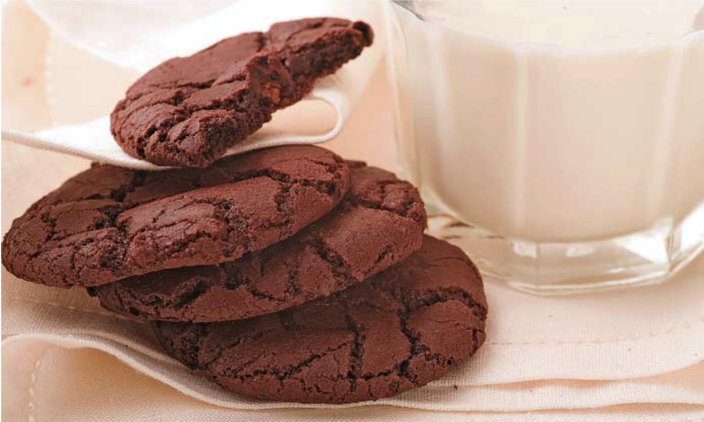

Cookie de Chocolate

Descrição
Cookies de chocolate são um tipo de biscoito ideal para café da tarde, por exemplo.
Ingredientes
- 2 copos de açúcar
- 1 ¼ copos de margarina amolecida
- 2 ovos grandes
- 2 colheres de chá de extrato de baunilha
- 2 xícaras de farinha
- ¾ copos de pó de cacau sem açúcar
- 1 colher de chá de bicarbonato de sódio
- ⅛ colher de chá de sal
- 1 xícara de nozes picadas
Passos
- Preaqueça o fogão a 145 graus.
- Bata o açúcar e a margarina em uma tigela grande até obter um creme claro e fofo. Junte os ovos, um de cada vez, e junte a baunilha.
- Misture a farinha, o cacau, o bicarbonato e o sal em uma tigela separada. Adicione à mistura de creme e misture até misturar bem. Junte as nozes. Coloque colheradas de massa com 5 centímetros de distância em assadeiras não untadas.
- Asse no forno pré-aquecido até que as bordas estejam firmes e os centros macios, 8 a 10 minutos. Deixe descansar um pouco antes de transferir para uma gradinha para esfriar completamente.